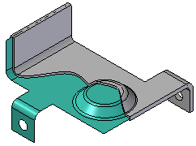

Mid-Surface command
Mid-Surface command
Constructs a surface between the sheet faces of a sheet metal part. You define the location of a mid-surface feature by specifying the side of the part you want to offset and a ratio value between 0 and 1.0.
Mid-surface features are primarily used in other software applications for simplifying analysis or creating flat patterns of complex parts.

By default, a mid-surface updates when the model geometry is changed; you cannot edit a mid-surface independently of the sheet metal part. You can remove this associativity by selecting the mid-surface in PathFinder, and then selecting the Break command on its shortcut menu.